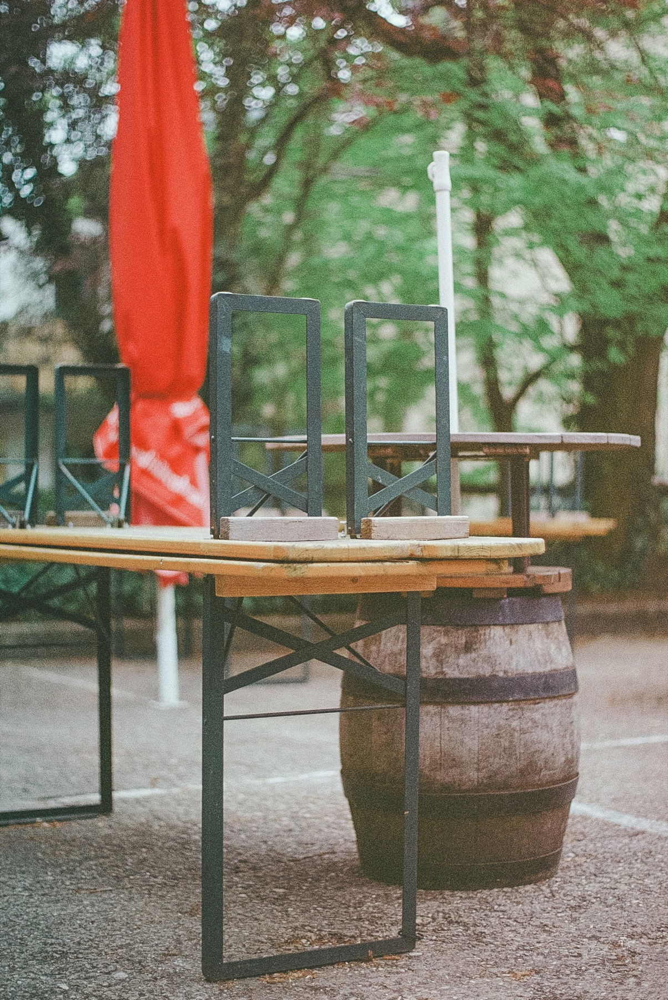
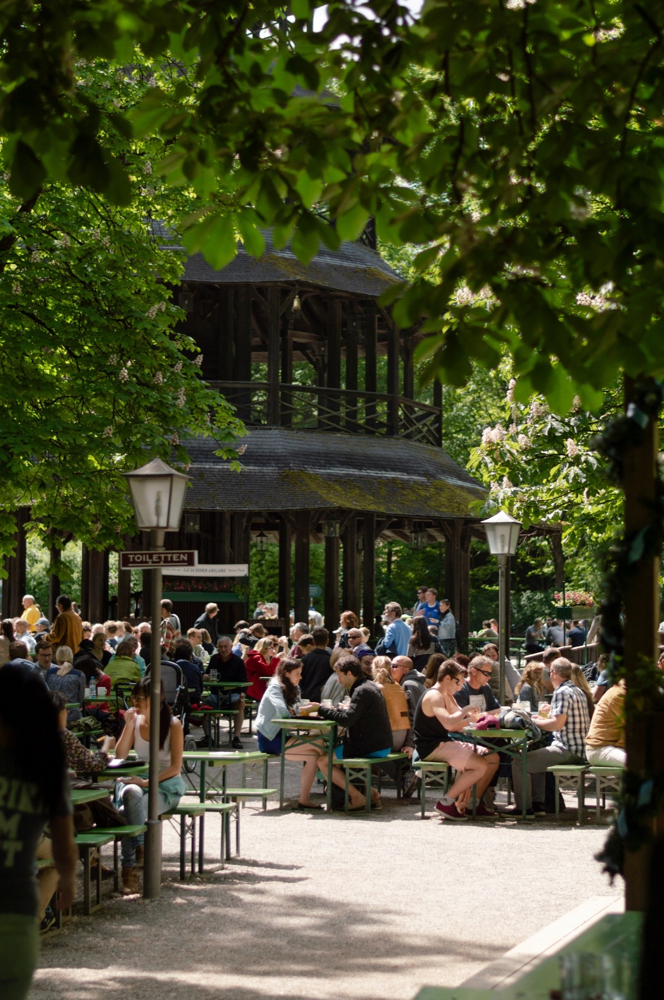
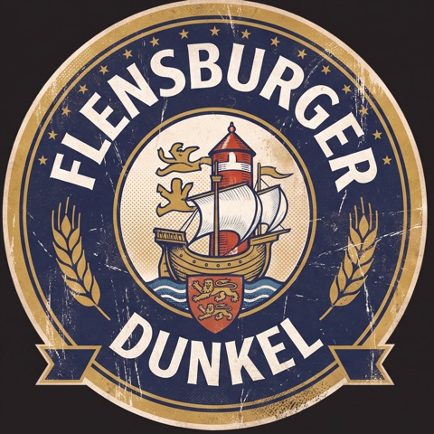
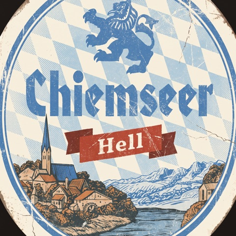
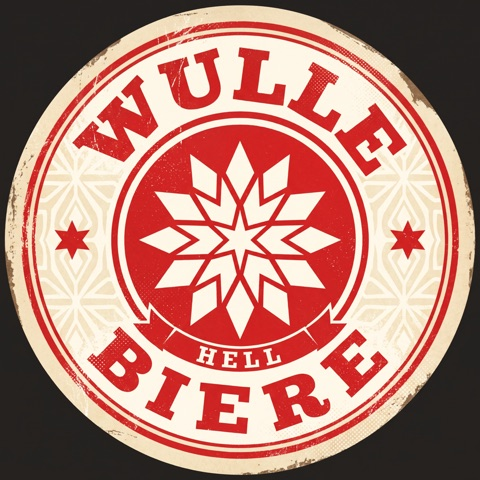
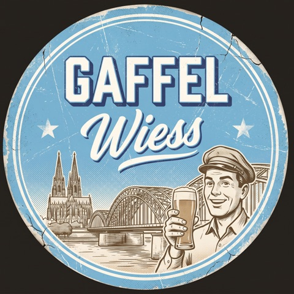
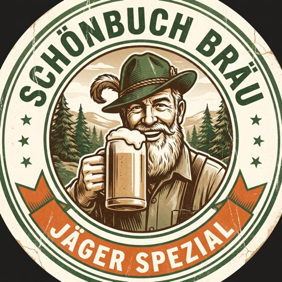
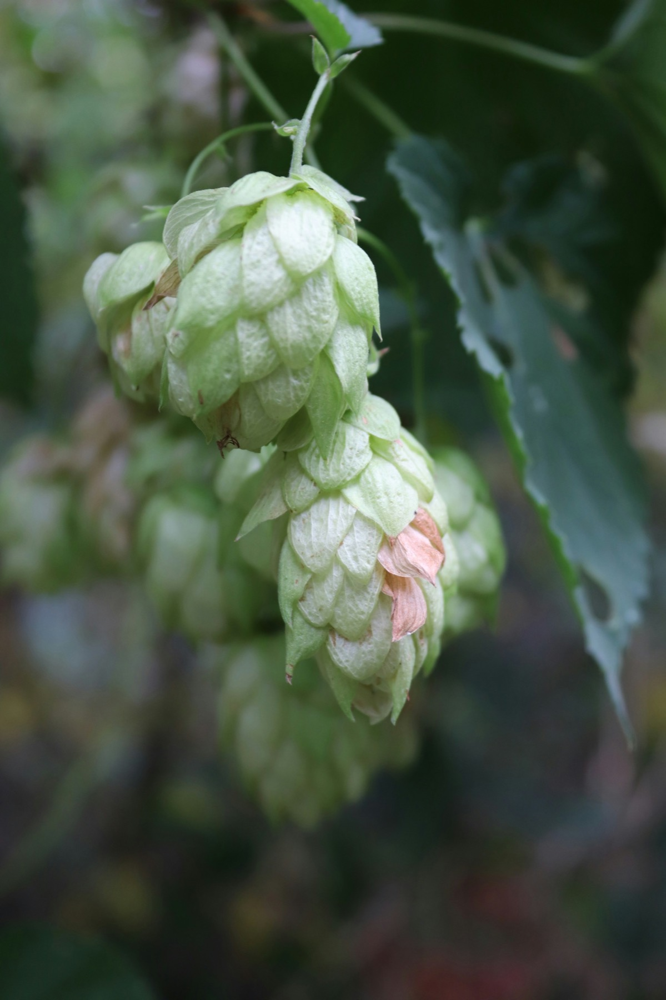
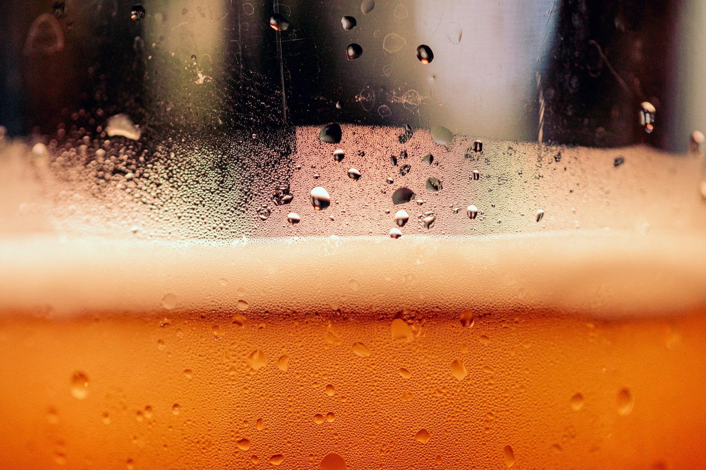

Ein Projekt der Hochschule der Medien Stuttgart
Deutschlands Brauereien sterben aus.
Wir wollen das mit Prost! ändern.
Die App, die Bierkultur zum Sammelspiel macht und kleinen Brauereien eine Bühne gibt.
Die Fakten
Was den Brauereien zusetzt
1.415
Brauereien 2025
137 weniger als im Rekordjahr 2019. Fast alle Bundesländer verlieren Betriebe.
−15,7 %
Absatz seit 2019
2025 nur noch 7,8 Mrd. Liter, der niedrigste Wert seit Beginn der Statistik 1993.
~20 %
Energiekosten
Anteil an den Herstellungskosten kleiner Brauereien. Dazu kommen teure Rohstoffe.
> 80 %
Marktmacht
So viel des deutschen Biers brauen die 64 größten Braustätten. Die Vielfalt der Kleinen bleibt unsichtbar.
Quellen: Statistisches Bundesamt (2026), Deutscher Brauer Bund, Private Brauereien Bayern nach Destatis

Unsere Idee
Prost! Der Sammelpass für Bierkultur
Wer vor Ort ein Bier trinkt und das Siegel fotografiert, bekommt ein digitales Badge. Jedes Bier zählt genau einmal.
Je kleiner die Brauerei und je weiter weg vom Wohnort, desto mehr Punkte. So lenken wir Neugier und Besuche dorthin, wo jeder Gast zählt.
- Badges sammeln
- Brauereikarte
- Rangliste & Duelle
So funktioniert’s
In vier Schritten zum Badge
- 01
Hingehen
Brauerei, Brauereigaststätte oder Biergarten besuchen. Die Karte zeigt, wo.
- 02
Austrinken
Das Bier vor Ort in Ruhe genießen, mit oder ohne Alkohol.
- 03
Siegel scannen
Leeres Glas oder leere Flasche mit Siegel fotografieren. Erst wenn die KI erkennt, dass das Bier leer ist, zählt es. Etiketten im Supermarkt abfotografieren bringt nichts.
- 04
Badge kassieren
Das Badge landet im Sammelpass, die Punkte in der Rangliste.
Der Sammelpass
Jedes Bier ein Sammlerstück
Jede Brauerei bekommt ein eigenes Badge im Retro-Look. Mit jedem Besuch wächst die Sammlung und die persönliche Bierkarte.





Vereinfachte Darstellung · Badges sind Designentwürfe, mit Adobe Firefly erstellt
Das Punktesystem
Klein und fern zählt mehr
Punkte = 10 × Größenfaktor × Distanzfaktor
Zu Hause in Stuttgart
Großbrauerei vor Ort
Über 100.000 hl im Jahr, 5 km entfernt
10 × 1 × 1
10 Pkt.
Wochenendtrip nach Oberfranken
Kleinstbrauerei im Dorf
900 hl im Jahr, rund 250 km entfernt
10 × 5 × 2
100 Pkt.
Erster Entwurf, die Faktoren kalibrieren wir gemeinsam mit Brauereien.

Verantwortung
Genuss statt Rausch
- Jedes Bier zählt genau einmal. Danach gibt es dafür keine Punkte mehr, also keinen Anreiz zum Rausch.
- Alkoholfrei zählt voll. Gleiche Badges, gleiche Punkte.
- Ab 16 und fälschungssicher. Altersprüfung, Standort und KI: Das Badge gibt es erst für das leere Glas vor Ort.
- Menschen zusammenbringen. Gemeinsam Brauereien entdecken, anstoßen und sich mit Freunden messen.
Für Brauereien
Mehr Gäste, mehr Sichtbarkeit
Sichtbarkeit
Eigenes Profil und hervorgehobene Pins auf der Karte.
Neue Gäste
Sammler:innen kommen gezielt vorbei, auch von weit her.
Aktionen
Bonusbadges zu Festen, Führungen und neuen Sorten.
Einblicke
Anonyme Statistiken: Woher kommen die Besucher:innen?
Sie führen eine Brauerei und möchten beim Pilotprojekt dabei sein? Schreiben Sie uns.

Sponsoring
Helfen Sie uns, Bierkultur zu bewahren
Wir suchen Partner aus Brauwirtschaft, Verbänden, Tourismus und Förderprogrammen, die mit uns den Prototyp und einen ersten Pilot in der Region Stuttgart möglich machen.
Sponsor werdenDas Team
Prost auf die Vielfalt.
- Julian Rößle
- Jannik Thieme
- Moritz Stoppel
Studierende der Hochschule der Medien Stuttgart, Wintersemester 2026/27.
Kontakt: [Mailadresse folgt]